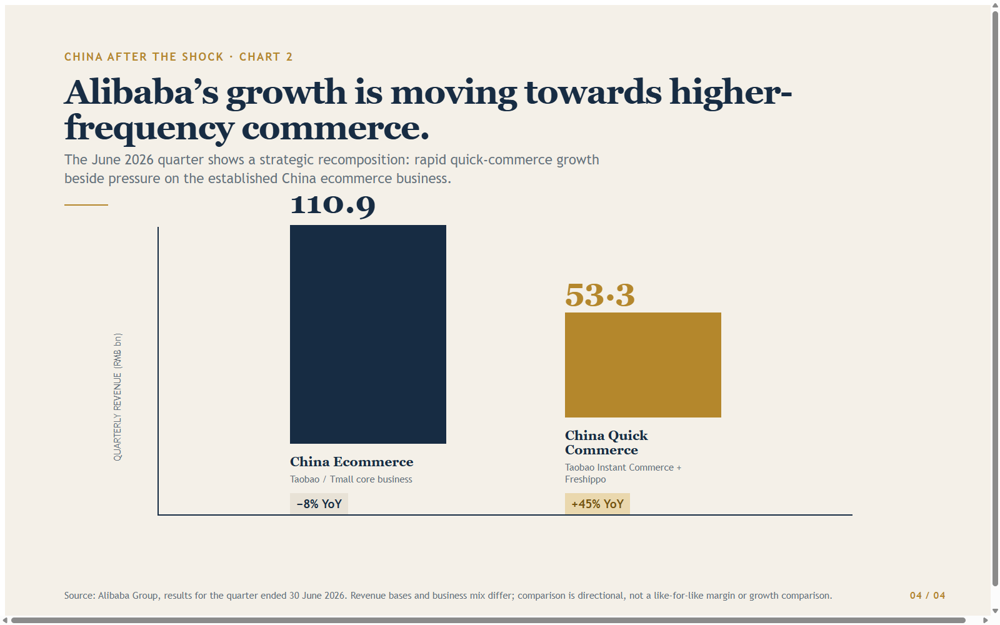
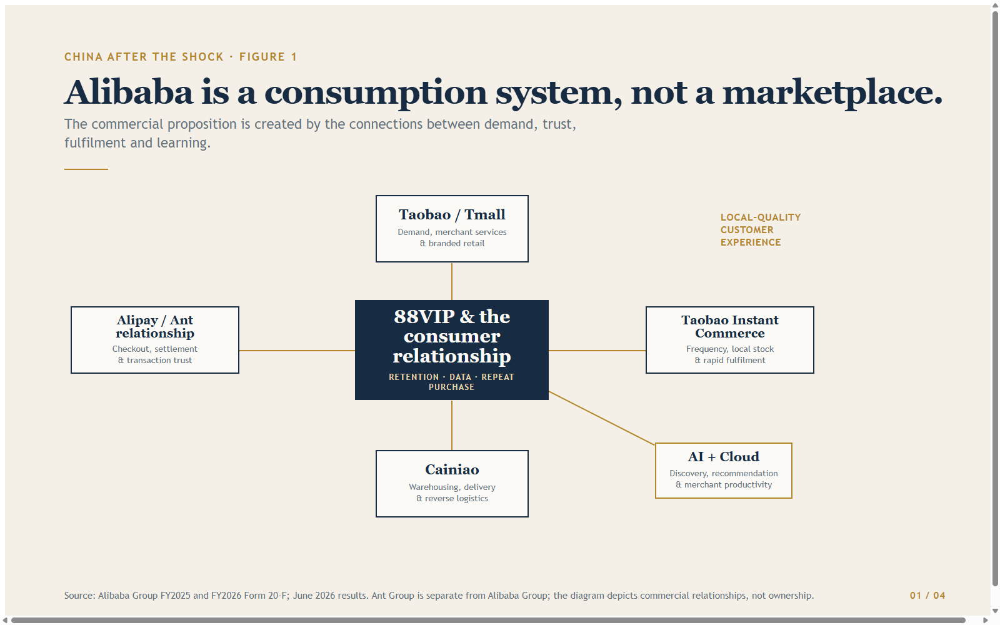
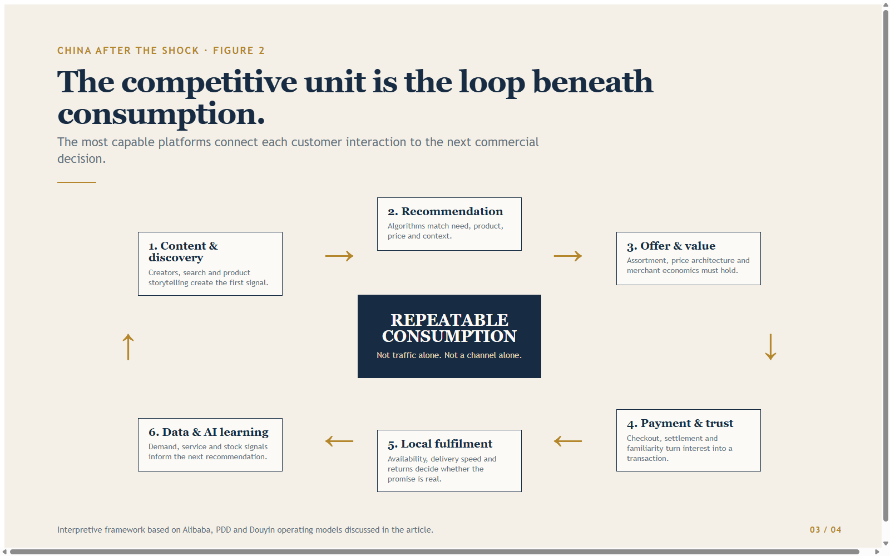
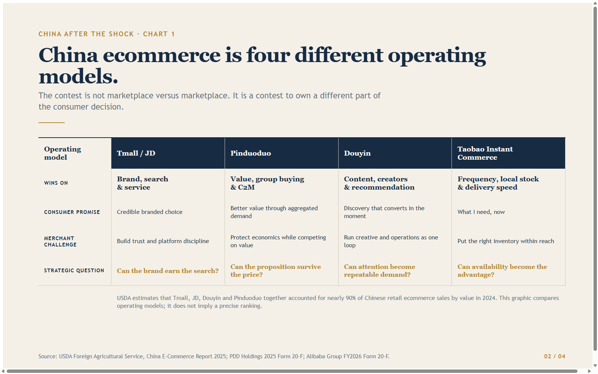

At Davos in 2018, Jack Ma made a point that sounds much less abstract now than it did then: “Every new technology will create social problems.”1
It was a useful warning, not least because China’s ecommerce market has spent the intervening years demonstrating both sides of it. The technology created astonishing consumer convenience, new merchants, new logistics networks and whole new routes from factory to household. It also created price wars, platform dependence, squeezed merchants, intense delivery economics and a regulatory response to the excesses of all three.
The China story after the shock is therefore not that ecommerce has slowed down, or that Alibaba has simply “come back”. It is that the world’s largest online retail market is being rebuilt around a more demanding operating system: value-conscious consumption, content-led discovery, instant fulfilment, payments, logistics and increasingly AI.
China remained the world’s largest online retail market for the twelfth consecutive year in 2024, with online retail sales of RMB15.5 trillion. In 2025, total online retail reached RMB15.97 trillion, up 8.6% year on year, while physical-goods online retail represented 26.1% of all consumer-goods retail sales.23
Those numbers matter. But they do not tell us the whole story.
In a mature market, putting product online is no longer the innovation. The innovation is making the whole commercial loop faster, more relevant, more local and harder for a competitor to copy.
The Alibaba Misunderstanding
Western observers still often talk about Alibaba as though it were a Chinese version of Amazon Marketplace: a place to list product, buy visibility and find consumers.
That description may once have been useful. It is no longer enough.
Alibaba is best understood as an attempt to recombine the components of Chinese consumption into one operating system. Under Chairman Joe Tsai and CEO Eddie Wu, the company’s strategic framing is now explicitly “AI + Cloud” and consumption. During FY2026 it reorganised Taobao and Tmall, Ele.me and Fliggy into the Alibaba China E-commerce Group.4
That is more than corporate tidying. It says that marketplace shopping, local services, food delivery, travel, membership and fulfilment are being treated as connected consumer moments rather than separate businesses.
The most visible expression is quick commerce. Alibaba rebranded Ele.me as Taobao Instant Commerce, presenting on-demand delivery as a core Taobao/Tmall capability and positioning around an expectation of delivery in roughly 30 minutes.5
For the quarter ended 30 June 2026, Alibaba reported RMB53.3 billion of China Quick Commerce revenue, up 45% year on year, driven by Taobao Instant Commerce and Freshippo. At the same time, its legacy China ecommerce revenue fell 8% on the reported basis, a reminder that building new consumer behaviour and defending the core marketplace are not cost-free exercises.6

Chart. Alibaba’s recomposition: fast quick-commerce growth alongside pressure in established China ecommerce. The revenue bases differ; this is a directional operating-mix comparison, not a margin comparison.
That tension is the real story. China ecommerce is moving beyond the old game of traffic, listings and ad slots. The new game is whether a platform can turn a consumer need into a completed transaction — with the right recommendation, price, payment method, stock position and delivery promise — faster than anyone else.
Alibaba’s 88VIP membership base, at about 64 million members by June 2026, is part of the answer. It is not simply a loyalty scheme. It is a way to bind together commerce, service benefits and recurring consumer attention inside the Alibaba ecosystem.7

Figure. Alibaba’s consumption operating system: Taobao/Tmall demand, 88VIP membership, Taobao Instant Commerce and Freshippo fulfilment, Alipay-linked payment, Cainiao logistics, and AI-led discovery.
The lesson for a Western executive is straightforward: Taobao and Tmall are not a channel at the edge of the business. They sit within a commercial system that is trying to own frequency, discovery and fulfilment together.
Ant, Alipay and Cainiao: The Infrastructure Beneath the Interface
The most important parts of the Chinese commerce model are often the least visible to an overseas brand.
Ant Group and Alipay are separate from Alibaba Group, and it is important not to blur that distinction. Alibaba disclosed a 33% equity interest in Ant Group in FY2025. Yet the relationship remains commercially material: Alibaba’s marketplaces use Alipay for payment processing and escrow, and Alibaba reported RMB15.47 billion of related payment-processing and escrow fees in that year.8
The point is not corporate structure. The point is commercial architecture.
A customer does not experience a marketplace, payment tool, loyalty mechanism and settlement system as four separate products. They experience one transaction. The platforms that make that transaction feel familiar, trusted and effortless own an advantage that a foreign brand cannot reproduce simply by translating a product page.
Cainiao plays an equally strategic role. It provides domestic warehousing, fulfilment, last-mile delivery and reverse logistics for Alibaba’s China marketplaces, alongside end-to-end cross-border fulfilment. In 2024, Alibaba moved to buy out Cainiao’s remaining minority shareholders and withdrew its planned IPO, explicitly retaining the business as strategic logistics infrastructure.9
That decision is revealing. In a market moving towards higher frequency and shorter delivery promises, logistics is not a utility to be procured after the commercial plan is written. It is part of the commercial proposition itself.
For anyone trying to enter China, that should change the order of questions. Do not begin with “which platform should we use?” Start with: what will the customer experience from discovery to delivery, and which ecosystem can reliably make that experience local?
The Competitive Shock: Pinduoduo and Douyin Changed the Rules
Alibaba is central to the story. It is not the whole story.
Pinduoduo changed the economics of value. Douyin changed the economics of discovery.
The US Department of Agriculture’s 2025 China ecommerce report estimates that Tmall, JD, Douyin and Pinduoduo together accounted for nearly 90% of Chinese retail ecommerce sales by value in 2024. It puts Douyin at 21.3% and Pinduoduo at 16.7%.10
The figures are estimates, not company disclosures. The strategic signal is nonetheless clear.
Pinduoduo’s model is not merely discounting. It combines group buying, social recommendation and consumer-to-manufacturer logic: aggregate demand first, then help merchants and manufacturers produce, price and distribute to meet it. PDD Holdings describes Pinduoduo and Temu as sharing the same broad value proposition and operating model while serving different geographies: both primarily connect China-based merchants with consumer demand.11
That helps explain why Temu should not be seen simply as a foreign discount app. It is an international demand surface connected to Chinese merchant capability, sourcing discipline and platform-directed operating know-how.
The challenge is that the original small-parcel, direct-from-origin playbook is becoming less secure. PDD’s own filing highlights exposure to tariffs, customs fees, changing de-minimis rules and dependence on third-party logistics and fulfilment partners.12
This is why China’s domestic experience matters to European and UK businesses. The Chinese platforms are learning to combine price, selection, recommendation and operational speed at home — then adapting those capabilities to a more regulated global environment. Their next advantage will not be price alone. It will be their ability to preserve value while redesigning fulfilment, compliance and local stock placement.
Douyin’s contribution is different. It makes content, recommendation and conversion part of one merchant loop. The USDA estimates 2024 Douyin Marketplace GMV at roughly US$477 billion, built around short video, livestreaming and recommendation algorithms.13
For a brand, that changes the operating model. Creative is not an awareness activity that happens before commerce. Creator relationships, live content, product demonstration, offer design, inventory and conversion are being managed together, in real time.
A Western brand that treats Douyin as “Chinese TikTok” will miss the point. It is a retail environment in which content is the shopfront, recommendation is the salesperson and operational execution determines whether the attention becomes a repeatable business.

Figure. The competitive loop beneath Chinese consumption: value, discovery, conversion, fulfilment, learning and renewed demand reinforce each other.

Chart. China ecommerce is no longer one market: comparative operating models for Tmall/JD, Pinduoduo, Douyin and Taobao Instant Commerce.
The AI Signal Inside Alibaba
This is also why AI is more than a corporate headline.
Alibaba’s current strategy links commerce to a much larger AI and cloud investment programme. Its FY2026 reporting described external Cloud Intelligence revenue growth of 40% year on year in the March quarter, with AI-related products representing 30% of external cloud revenue.14
The commercial question is not whether every merchant needs an AI assistant. It is whether AI improves the elements that decide marketplace performance: product discovery, recommendation, customer service, content production, demand sensing, merchant productivity and stock placement.
That is why the reported departure of Zhang Kaifu — a former Alibaba vice president associated with Taobao-related search, recommendation and AI work — is worth noting, but not overplaying. Trade reporting in June 2026 said he had left Alibaba to establish an AI venture after an internal reorganisation moved his intelligent search-and-recommendation teams into a new business group.15
The reported move is not a measure of Alibaba’s health. It is a human signal of where the contest has moved. Search and recommendation — once back-end machinery — have become strategic terrain.
In a market this competitive, AI does not remove the need for product, price or local fulfilment. It increases the speed at which a platform can learn which combination of the three will work.
What Western Businesses Still Get Wrong
There are four persistent misunderstandings.
First: China is not one channel.
A brand cannot decide to “do China” by choosing Tmall, opening a flagship store or hiring an agency. The relevant question is where the product fits: branded search and service, value-led group demand, content-led discovery, local on-demand consumption or some combination of these.
Second: price is not the only competitive advantage.
Chinese consumers are value-conscious. That is not the same as being indifferent to provenance, quality, service or experience. The winning proposition is usually a disciplined trade-off between all four. A foreign brand that assumes heritage alone justifies a premium will struggle. One that tries to mimic domestic low-price players without comparable supply-chain economics will struggle even more.
Third: fulfilment is marketing.
The rise of Taobao Instant Commerce makes the point starkly. Availability, delivery speed and returns shape the brand experience at least as much as a campaign does. A perfect livestream cannot repair a late delivery or an unavailable product.
Fourth: cross-border is a capability, not a shortcut.
China’s cross-border ecommerce trade reached US$376.5 billion in 2024, according to the USDA, supported by a network of pilot zones, logistics systems and rules that have made it an established part of the trade architecture.16
For a UK or European business, that does not mean China can be entered with a few cross-border listings and a campaign budget. It means the market offers a more developed set of ways to test demand — provided the company can manage product eligibility, tax, duties, local customer expectations, platform economics and fulfilment with equal seriousness.
The UK–China Bridge Is Still Commercially Real
The geopolitical backdrop is more difficult than it was a decade ago. That is not an argument for pretending the market has disappeared.
Official UK Department for Business and Trade figures put UK–China trade at £105.3 billion in 2025, making China the UK’s fourth-largest trading partner. Around 9,800 UK VAT-registered businesses exported goods to China and about 95,700 imported goods from China in the same year.17
The China-Britain Business Council remains useful in this environment not because it can make China simple, but because it helps companies turn a broad ambition into market intelligence, relationships and a more realistic route to action.
HungryPanda offers a different, more entrepreneurial bridge. Founded in the UK to serve Chinese communities abroad, it built food delivery, fresh food and local lifestyle services around culturally specific demand.18
It is not comparable in scale to Alibaba, PDD or Douyin. Its relevance is more practical. It shows how a narrowly understood community need can become a logistics and commerce wedge — a lesson for brands that think international expansion begins only with a national launch.
The most credible UK–China strategy today is neither blind enthusiasm nor performative withdrawal. It is selective engagement: a clear category thesis, an honest product-market-fit test, compliant cross-border architecture and a local operating model that respects how consumers actually discover, buy and receive product.
What I Saw From the Inside
My years around Alibaba taught me that the strongest Chinese commerce operators do not see the customer journey as a sequence of departments.
They do not begin with a marketing plan, pass the sale to ecommerce, pass fulfilment to logistics and discover the payment issue at checkout. They treat demand, merchant economics, content, payment, data and delivery as one commercial problem.
That is what many Western businesses still misunderstand.
They look at China and see a difficult consumer market, an opaque platform landscape, a price war and a regulatory risk. Those things are real. But they miss the deeper lesson: China is where integrated commerce has been stress-tested at extraordinary scale.
The companies emerging stronger from that pressure are not necessarily those with the loudest brands. They are the ones that can link consumer value to merchant economics, merchant economics to fulfilment, fulfilment to data and data back to the next consumer interaction.
Alibaba’s ecosystem is still one of the most important expressions of that model. Tsai and Wu’s challenge is to make it work again at a time when Pinduoduo is redefining value, Douyin is redefining discovery, rapid delivery is redefining convenience and AI is redefining the speed at which the system learns.
That is China after the shock.
Not a retreat from ecommerce. Not a simple return to the old marketplace. A more intense competition to own the operating system beneath consumption.
The Opportunity — One Clear Takeaway
If you are a UK or European business looking at China, stop asking: which marketplace should we list on?
Ask instead: which Chinese commerce operating system fits our product, price, customer and delivery reality — and what would it take to be credible inside it?
The answer may involve Alibaba. It may involve Tmall, Taobao, Alipay-linked checkout, Cainiao-enabled fulfilment, Douyin-led discovery, a value proposition shaped by the pressure Pinduoduo created, or a small, targeted cross-border test before a larger commitment.
But it will not be solved by presence alone.
Jack Ma’s old warning remains useful. Technology creates opportunity. It also creates new pressures, new dependencies and new standards of execution. The businesses that understand both sides of that equation will have a far better chance of building something durable in China — and of competing with the commercial models China is now exporting to the rest of the world.
If you are assessing China, Chinese consumer demand or a cross-border expansion model between the UK, Europe and Asia, reach out directly on LinkedIn.
Sources
- World Economic Forum, *Jack Ma Davos top quotes* (2018)
- State Council / Ministry of Commerce, China online retail market (2025)
- National Bureau of Statistics of China, 2025 retail sales
- Alibaba Group FY2026 Form 20-F
- Alibaba Group, June quarter 2026 results
- Alibaba Group FY2025 Form 20-F
- USDA Foreign Agricultural Service, China E-Commerce Report 2025
- PDD Holdings, 2025 Form 20-F
- 36Kr Europe, Zhang Kaifu reportedly leaves Alibaba
- UK Department for Business and Trade, China trade and investment factsheet
- HungryPanda